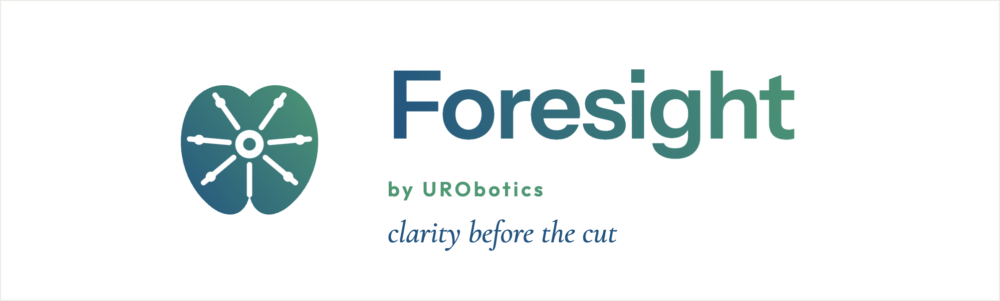

Your details
Used to calculate the estimates below. Nothing here is saved or sent anywhere.
These estimates come from published, peer-reviewed prediction models and are for education only. They do not replace consultation with your urologist.

Foresight estimates likely outcomes of robotic radical prostatectomy from the details in your biopsy and MRI report.
It is built for men weighing surgery and the clinicians discussing it with them.
It is educational only, and does not replace a consultation with your urologist.
Used to calculate the estimates below. Nothing here is saved or sent anywhere.